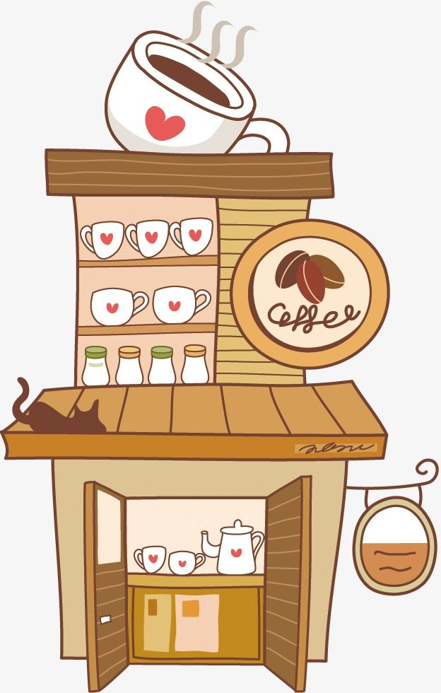

Welcome to KRPM Coffee Shop, a place where coffee lovers gather to enjoy great blends. Our shop is designed to be a cozy haven for everyone who appreciates the art of coffee. From casual sips to deep conversations, we offer an inviting space where memories are made with every cup.
KRPM stands for Kierk Ryan Paul Martinez, the founder and owner of KRPM Coffee Shop. Kierk's passion for coffee started as a hobby and quickly became his life's mission. His dream was to create a place where people could enjoy high-quality coffee while connecting with others.
Our vision at KRPM Coffee Shop is simple: To offer the best coffee experience in town. We aim to be more than just a coffee shop — we want to be a part of the community, a place where everyone feels at home. We strive for excellence in every cup we serve, from our traditional brews to our signature creations.
We believe in quality, consistency, and a commitment to our customers. Our values are at the heart of everything we do, ensuring that each cup is brewed to perfection, every visit is a pleasant experience, and the community always comes first.
KRPM Coffee Shop is not just about coffee — it’s about bringing people together. We actively support local events, businesses, and initiatives that make our community stronger. Whether it's hosting a small gathering or participating in local charities, we are proud to contribute to the growth and well-being of our town.